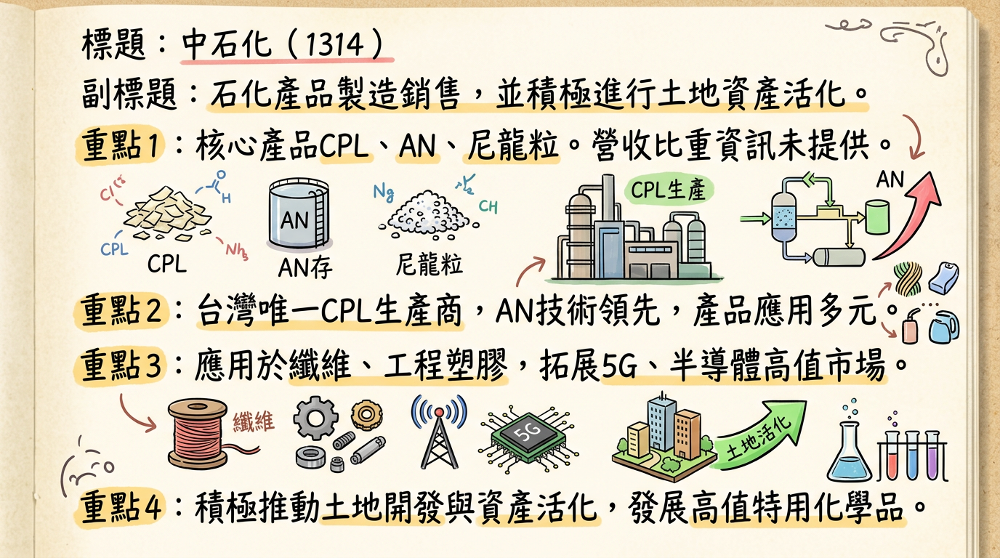
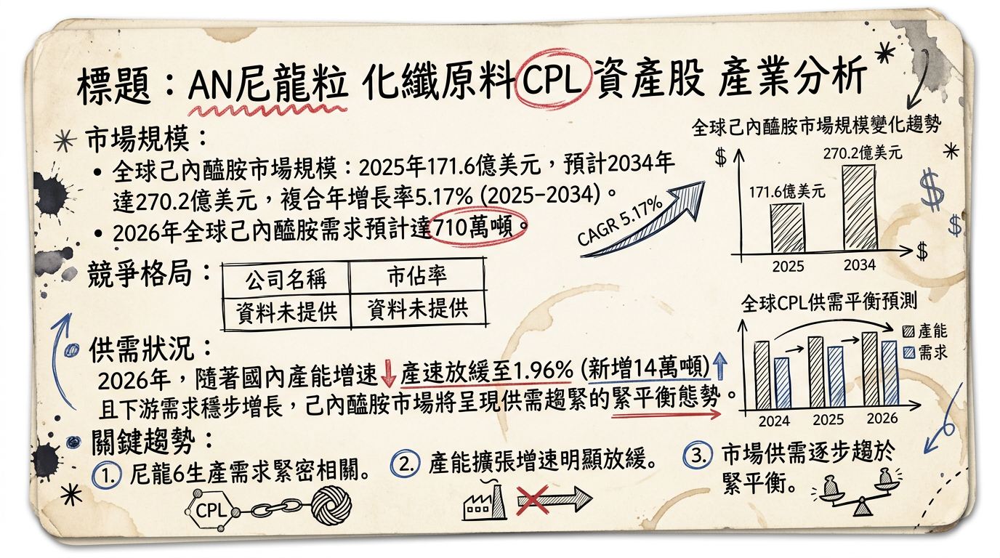
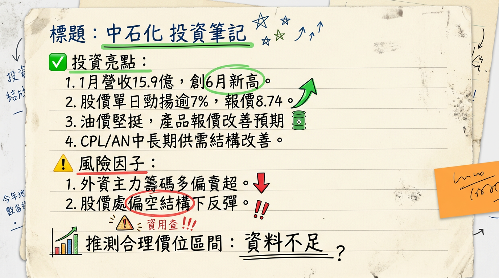

1314 中石化 深度研究報告
一句話摘要
中石化受惠於資產活化收益，短期財務壓力稍緩，但核心石化產品（己內醯胺CPL、丙烯腈AN、尼龍粒PA6）因中國大陸產能過剩而面臨嚴峻的供需失衡與本業虧損。公司正積極透過活化土地資產以充實營運資金，並堅定轉型至高值化特用化學品、新能源及電子材料領域，預期新事業貢獻需待2026年下半年至2027年逐步發酵，短期營運仍處於艱困過渡期。
公司概覽
中石化是一家從事石化產品製造與銷售的公司，同時積極推動土地開發與資產活化。其核心石化產品包括己內醯胺 (CPL)、丙烯腈 (AN)、尼龍粒 (PA6) 及硫酸銨 (AS)。此外，公司正積極拓展高值特用化學品，如鄰苯基苯酚 (OPP) 衍生物、無鹵阻燃劑、低介電材料、電子級用樹脂等，瞄準光學/電子材料、塗料/黏著劑、水處理、新能源、5G通訊與半導體材料等高附加價值應用領域。
營收結構 (2025 年上半年)
| 產品線/子公司 | 營收佔比 |
|---|
| 丙烯腈 (AN) | 41% |
| 威名石化 (大陸子公司) | 24% |
| 己內醯胺 (CPL) | 17% |
| 尼龍粒 (PA6) | 11% |
| 其他子公司及產品 | 7% |
*
頭份廠 (苗栗)： 曾生產 CPL 和尼龍粒。然因市場供過於求，已於2023年底停產CPL一線，並於
2025年11月13日宣布CPL二線及尼龍粒工場停止生產並進行除役，此舉將使公司CPL年產能從30萬噸降至20萬噸。該廠區正規劃轉型為精細化工產品生產基地。
* 小港廠 (高雄)： 主要生產 CPL，2025年第一季產能利用率69%，第二季65%。
* 大社廠 (高雄)： 主要生產 AN，2025年第一季產能利用率99%，第二季達到100%。
* 斗六廠 (雲林)： 主要生產 PA6，2025年第一季產能利用率67%，第二季70%。
*
江蘇威名新材料有限公司 (威名石化)： 生產環己酮、PA6等尼龍系列產品，2025年上半年受關稅及全球景氣低迷影響，營收年減49%，佔比約24%。部分產線曾短暫停工後於2025年6月重啟。
所屬產業與相關題材：
中石化屬於塑膠工業，是合成樹脂、工程塑膠及化纖的上游原料供應商。
- 相關題材： 資產活化/土地開發（在高雄、苗栗等地擁有大量土地資產，推動商辦/園區開發）、高值化特用化學品與新材料（新能源、5G通訊、半導體材料）。
核心競爭優勢
台灣 CPL 龍頭地位： 中石化是台灣唯一擁有 CPL 生產能力的公司，在國內市場具獨佔性，儘管正縮減產能以因應全球過剩。
龐大資產價值： 公司在高雄、苗栗等地擁有大量土地資產，具備資產活化的潛力，能為公司帶來可觀的業外收益以支撐轉型。
高值化轉型決心： 積極佈局新能源、5G通訊、半導體材料等高附加價值特用化學品，有望擺脫傳統大宗石化產品的價格波動與供需困境。
技術與產品多元性： 在AN技術上具領先地位，並不斷開發OPP衍生物、無鹵阻燃劑、低介電材料等新產品。
財務分析
近六個月月營收趨勢
| 月份 | 金額 (新台幣億元) | 月增率 MoM | 年增率 YoY |
|---|
| 2026年01月 | 15.90 | +17.98% | -32.70% |
| 2025年12月 | 13.47 | +22.30% | -38.98% |
| 2025年11月 | 11.02 | +20.21% | -37.88% |
| 2025年10月 | 9.17 | -41.74% | -57.14% |
| 2025年09月 | 15.73 | +28.21% | -23.94% |
| 2025年08月 | 12.27 | -25.43% | -56.58% |
最新季度財務數據 (2025年第三季)
- 季營收： 新台幣 44.46 億元
- 毛利率： -12.26%
- 營業利益率： -21.11%
- 每股盈餘 (EPS)： -0.24 元
全年度營收與 EPS
| 年度 | 全年合併營收 (新台幣億元) | 全年EPS (元) |
|---|
| 2024 | 294 | 0.07 |
| 2025 (累計至12月) | 192.17 | -0.75 (累計至Q3) |
中石化在2025年面臨嚴峻的營運挑戰，月營收呈現明顯年減趨勢，並在10月降至9.17億元的低點。2025年第三季更是出現毛利率-12.26%、營業利益率-21.11%的深度虧損，EPS亦為負0.24元。2025年累計至第三季的EPS為-0.75元，顯示本業持續承壓。2024年雖然全年稅後淨利為0.07元，但主要歸因於業外土地處分收益達新台幣19億元，本業仍為虧損。
法說會重點
最近一次法說會日期： 2025年09月12日 (亦有2025年04月11日法說會資訊可供參考)
管理層說明及展望 (2025年9月12日法說會)：
- 營運摘要： 2025年上半年合併營收為新台幣114億元，年減30%。本業虧損擴大至新台幣15億元，稅後淨損新台幣19億元，每股虧損新台幣0.51元。主要原因為主要產品價量齊跌及匯率波動。
- 營運展望 (2025年及2026年)： 公司預期從2024年至2026年將處於艱困的過渡期。短期策略聚焦穩定營運與財務、嚴格風險控管，並透過活化土地資產充實營運資金。
- CPL及PA6市場： 受市場需求低迷與關稅衝擊最為嚴重，2025年上半年產銷量下滑約10%至20%。大陸威名石化營收大幅衰退49%。
- AN市場： 2025年上半年產銷量與去年同期持平，但下游ABS、NBR市場受美國關稅間接影響銷售。
- 新事業發展： 長期將持續推動轉型計畫，在新事業領域（新能源、5G通訊、半導體材料）尋求突破，預計2026年下半年至2027年開始對營收產生較顯著貢獻。
- 資產活化： 京華城聯貸案已提前償還新台幣15億元。2025年9月9日公開標售北高雄橋頭工業廠房，土地面積達8,484坪。
管理層說明及展望 (2025年4月11日法說會補充)：
- 2024年營運： 合併營收294億元，年增16%，本業虧損較2023年大幅減少約35%。稅後淨利2.2億元（EPS 0.07元），主要來自業外收益26億元（處分南部土地貢獻約19億元）。
- 2025年展望： 核心石化業務展望保守且嚴峻，壓力來自大陸同業擴產及對東南亞出口關稅影響。預計將持續透過資產活化與處分挹注業外收益。
- 新事業發展： 氫能預計2025年下半年完成產氫及熱產熱性能驗證測試。電池阻燃劑預計2025年下半年有較大市場回饋。頭份廠天然氣發電機組預計2025年下半年取得使照。半導體材料已進行一至兩年合作。
- 台南安順廠區整治： 預計2026年6月前處理剩餘5萬噸污土。
券商觀點
券商目標價 (2025-2026年)
| 券商名稱 | 目標價 (新台幣元) | 評等 | 日期 |
|---|
| 目前無最新券商目標價、EPS 預估及評等調整資訊 | | | |
財報深度分析
利潤率趨勢
| 季度 | 毛利率 | 營業利益率 | 稅後淨利率 |
|---|
| 2024年Q3 | -0.15% | -7.16% | -8.17% |
| 2024年Q4 | -9.53% | -19.73% | 6.53% |
| 2025年Q1 | -0.68% | -8.42% | -4.79% |
| 2025年Q2 | -10.75% | -19.55% | -33.31% |
| 2025年Q3 | -12.26% | -21.11% | -20.44% |
中石化自2024年第三季以來，毛利率和營業利益率大多呈現負值，且在2025年第二、三季進一步擴大虧損。雖然2024年第四季稅後淨利率因業外收益轉正，但本業持續虧損顯示核心石化業務面臨巨大壓力。主要原因為：
- 大宗石化產品價量齊跌： 中國大陸同業持續擴產導致CPL、PA6、AN等產品供過於求，價格競爭激烈，價差收窄至歷史低位。
- 需求疲軟： 受全球通膨、升息及歐美零售市場經濟衰退影響，下游需求不振。
- 匯率與關稅影響： 2025年第二季業外損失擴大亦受對等關稅及匯率波動影響。
- 業外收益支撐： 2024年全年稅後淨利0.07元，主要仰賴處分南部地區土地貢獻約19億元的業外收益，本業仍處於虧損狀態。
存貨與營運能力分析
| 季度 | 存貨週轉天數 (天) | 應收帳款收現天數 (天) | 應收帳款週轉率 (次) |
|---|
| 2024年Q3 | 611.39 | 39.17 | N/A |
| 2024年Q4 | 760.73 | 47.04 | N/A |
| 2025年Q1 | 697.29 | 37.86 | 2.38 |
| 2025年Q2 | 850.78 | 45.81 | 1.97 |
| 2025年Q3 | 916.27 | 41.96 | 2.14 |
- 存貨週轉天數： 從2024年第三季的611.39天一路飆升至2025年第三季的916.27天，顯著的上升趨勢強烈暗示公司存貨有異常堆積或去化緩慢現象，直接反映市場需求疲軟及供過於求的嚴峻態勢。
- 應收帳款收現天數： 雖然在各季度間有所波動，但整體維持在40-50天之間，變化幅度相對較小，顯示應收帳款管理能力大致穩定，未出現顯著惡化。
資本支出與產能規劃
*
威名石化基地 (中國大陸)： 總投資約人民幣68億元。第一階段已開始貢獻營收，但2025年上半年受關稅及景氣低迷影響，產銷量大幅下滑。第二階段（環己酮水合法、CPL、OPP）預計2027年投產，但公司正評估效益並引進策略投資人。
* 高雄洲際碼頭專案： 投資32億元。第一、二階段液氨槽和苯酚槽已帶來貿易和租賃收入，第三階段儲槽預計2024年底啟用，將提升原料調度彈性。
* 台灣精細化工： 評估後投資總額修正為32億元。一期工程兩項產品已完成量產測試，擬推出OPP衍生物。
* 台南安順廠區整治： 預計2026年6月前處理剩餘5萬噸污土。
* 新事業轉型： 資本支出主要用於新能源、5G通訊及半導體相關材料的發展。
其他財報重點
- 負債比率： 2025年第三季為41.54%，較前一季下降，顯示財務結構相對穩健。
- 自由現金流量： 波動較大，2025年第三季轉為正值674,871千元，但長期穩定性仍需觀察。
- 業外收支： 2024年業外土地處分帶來顯著收益，是公司年度獲利關鍵。2025年第二季則因關稅及匯率因素導致業外損失擴大。
股權異動
近期股權異動摘要
| 異動類型 | 主體 | 張數 | 區間/轉換價/目的 | 日期 |
|---|
| 申報轉讓 | 未發現 2024-2026 年最新記錄。 最近一次為 2022/03/25 中工機械(股) 轉讓 13,110 張予特定人。 | | | |
| 庫藏股買回 | 未發現 2024-2026 年最新記錄。 | | | |
| 可轉換公司債 | 未發現 2024-2026 年最新發行記錄。 | | | |
| 現金增資/減資 | 未發現 2024-2026 年最新計畫。 | | | |
中石化近年股利發放不穩定。2022年曾發放現金股利0.40元/股。2024年EPS為0.07元。根據可得資料，2025年度目前未有股利發放資訊，主要反映其本業虧損。
產業分析
己內醯胺 (CPL) 市場概況
* 2025年為171.6億美元，預計到2034年增長至270.2億美元，CAGR 5.17% (2025-2034)。
* 另有報告預計2025年171.9億美元增長到2026年184.9億美元，CAGR 7.6%。
* 2023年約781億人民幣，預計到2030年達1204億人民幣，CAGR 6.3% (2024-2030)。
- 供需狀況： 2025年市場波動劇烈，中國大陸己內醯胺產能達807萬噸，同比增長16.1%，行業整體處於嚴重供過於求。2026年中國大陸總產能預計將超過全球需求總量，供過於求格局持續擴大。需求方面，2025年中國需求量達681.7萬噸，同比增長5.1%。
- 產業平均毛利率水準： 目前未找到2024-2026年具體數據。
丙烯腈 (AN) 市場概況
* 2025年149.7億美元，預計到2026年增長到160.2億美元，CAGR 7.0%。
* 預計到2030年達到207.2億美元，CAGR 6.6%。
* 另有報告指出2025年125.8億美元，預計到2034年增長到180.3億美元，CAGR 4.08% (2026-2034)。
* 產量計：2025年預計879萬噸，預期到2030年達到1,109萬噸，CAGR 4.75% (2025-2030)。
- 供需狀況： 2025年中國大陸丙烯腈市場從缺貨轉向過剩，產能突破544.9萬噸，增速近24%。下游需求疲軟導致價格大幅下跌，行業全面進入供過於求調整期。2026年供應過剩壓力將進一步加劇，預計全年產能增速保持15%以上。
- 產業平均毛利率水準： 目前未找到2024-2026年具體數據。聚丙烯腈(PAN)作為下游產品毛利率約20.78%。
尼龍粒 (PA6 / Nylon 6) 市場概況
* 2025年預計173.4億美元，並預計到2032年達到269.5億美元，CAGR 6.5% (2025-2032)。
* 另有報告指出2024年165.53億美元，預計到2032年增長到251.54億美元，CAGR 5.37% (2024-2032)。
* 2024年165.6億美元，預計到2025年增加至174.8億美元，預計到2034年達到約284.6億美元，CAGR 5.57% (2025-2034)。
- 供需狀況： 2025年尼龍產業面臨「急劇下滑」，價格下跌、開工率下降、庫存積壓、虧損擴大，核心問題在於供需失衡，紡織長絲領域尤為突出。2025年第三季度，亞太地區尼龍6價格大幅下跌約8%，原因是需求低迷和紡織級切片持續供過於求。
- 產業平均毛利率水準： 目前未找到2024-2026年具體數據。
競爭格局
主要競爭對手比較 (CPL, AN, PA6)
| 產品線 | 中石化 (1314) 特點/產能 | 主要競爭對手 (公司名) | 競爭對手產能/特點 | 市場趨勢/影響 |
|---|
| CPL | 台灣唯一生產商，年產能將降至20萬噸 (2025/11月決議)。 | 中國魯西化工、恆逸石化、華魯恆升 | 魯西70萬噸，恆逸60萬噸(擴產至120萬噸)，華魯恆升45萬噸。 | 中國大陸產能佔比約60%，CR5合計產能佔比高達45-48%，產業集中度高且規模龐大，供過於求嚴重。中石化相對規模小。 |
| AN | 技術具領先地位，大社廠2025年上半年稼動率達100%。 | INEOS、Ascend、中國中石化、台塑集團、中國裕龍石化、鎮海煉化 | 中國產能佔全球50% (2025H1)，生產企業數量增至20家，中國CR5產能佔比達63.47%。 | 中國大陸加速擴產，2025年新增產能達105萬噸，總產能突破544.9萬噸。市場從寡頭壟斷轉向多強爭霸，競爭加劇。 |
| PA6 | 斗六廠2025年上半年稼動率約70%。威名石化(大陸)生產環己酮、PA6，2025H1營收年減49%。 | BASF、DuPont、LANXESS、Invista、旭化成、東麗等。 | 全球前十大供應商產能佔比約80%。中國大陸PA6國產化已形成全面對外輸出。 | 2025年產業面臨急劇下滑，供需失衡嚴重。亞太地區價格大幅走低約8%。 |
產業趨勢 (機會與威脅)
1.
永續發展與循環經濟： 生物基、低排放生產技術及尼龍化學回收日益受關注，可顯著降低碳足跡。
2. 高性能材料需求： 汽車、電子和工業機械對輕質耐用、高性能聚合物的需求持續增長。
*
高值化與特用化學品轉型： 佈局OPP衍生物、無鹵阻燃劑、低介電材料、電子級用樹脂等高附加價值產品，有望擺脫大宗石化困境。
* 循環經濟與綠色材料： 若能投入生物基或回收技術，將符合全球趨勢並創造新市場機會。
* 資產活化： 大量土地資產為公司提供財務彈性，可為新事業發展提供資金。
* 能源轉型： 發展氫能、天然氣機組，尋求電子級化學品合作。
*
大宗產品供過於求： CPL、AN、PA6產業因中國大陸擴產而面臨嚴重價格競爭，利潤空間被壓縮。
* 國際貿易摩擦： 美國關稅政策影響全球貿易流向，加劇亞洲區域競爭，並間接影響AN、PA6銷售。
* 原料成本波動： 苯、丙烯等原物料價格波動直接影響生產成本及獲利。
* 新事業推展不如預期： 精細化工產品成本高，第二階段建廠計畫可能調整，新事業效益仍需時間驗證。
*
電動車 (EV)： 尼龍樹脂在電動車輕量化部件、電池外殼、安全氣囊等應用日益增加。中石化作為PA6和AN供應商可間接受益。
* 高性能工程塑膠： 尼龍6和AN是製造電子電器、工業機械零件高性能工程塑膠的關鍵原料。
* 5G通訊與半導體材料： 中石化積極開發低介電樹脂、電子級化學品，有望切入5G通訊基板及半導體供應鏈。
* 循環回收與綠色化工： 永續發展趨勢下，若能投入生物基或可回收材料，將掌握綠色化工機會。
近期催化劑
利多催化劑
- 2026年03月06日 股價表現： 股價盤中勁揚逾7%，報價8.74元，受塑化族群因油價走堅、產品報價改善的預期發酵，以及市場對CPL、AN中長期供需結構改善的想像所帶動。
- 2025年09月20日 減緩營運壓力雙策略： 公告資產活化處分高雄前鎮及楠梓區投資性不動產獲利23.79億元，並規劃持續釋放土地價值。新事業方面，電池無鹵型高溫阻燃劑獲廠商證實安全性並報價；5G低介電樹脂毫米波銅箔基板材料已完成日韓等8家海外客戶送樣測試，具低損耗優勢。
- 新事業佈局： 持續在新能源、5G通訊、半導體材料等高值化領域取得進展，預期2026年下半年至2027年開始貢獻營收。
利空催化劑
- 2026年01月/02月 月營收公告： 2026年1月營收15.9億元，月增17.98%，但年減32.7%。2025年12月營收13.47億元，月增22.3%，但年減38.98%。持續的年減反映傳統石化本業的疲弱。
- 2025年11月13日 頭份廠CPL/PA6產線停止生產並除役： 因應市場需求萎縮、全球產能供過於求及美國關稅政策等多重因素影響，決議停止CPL二線及尼龍粒工場生產，使CPL年產能降至20萬噸，顯示傳統產品線面臨結構性困境。
- 2025年09月12日 法說會： 公布2025年上半年本業虧損擴大至15億元，稅後淨損19億元，每股虧損0.51元，並預期2024-2026年為艱困過渡期。
- 傳統石化產業逆風： 石化行業2026年度策略報告預期，降息週期下原油市場仍有不確定性，PX-PTA-聚酯產業鏈利潤或有修復，但整體石化業仍面臨供過於求壓力。
⭐ 成長動能時間軸
| 項目類別 | 具體計畫/事件 | 預計時間點/狀態 | 備註/影響 |
|---|
| 擴廠 | 威名石化基地 (中國大陸) 第二階段投產 (環己酮水合法、CPL、OPP) | 預計2027年 | 總投資約人民幣68億元。目前五評審批申請中，公司積極引進策略投資人洽談，若市況低迷將另行規劃。 |
| 台灣精細化工一期工程 (OPP衍生物) | 2024年5月開始生產；已完成量產測試 | 投資總額修正為32億元。以光學OPP衍生物為主。 |
| 環己酮 (水合)、CPL 第二階段工程投產 | 預計2026年 | 2023年9月通過立項。 |
| 新客戶/市場 | 光學OPP衍生物、氫化產品 | OPP衍生物2024年5月開始生產，氫化產品2024年下半年排入量產 | 初期先以客戶試樣為主，目標高端光學應用市場。 |
| 電池無鹵型高溫阻燃劑 | 預計2025年下半年有較大市場回饋 | 已獲多家廠商證實安全性並提出報價與供貨規劃，應用於車用電池、儲能。 |
| 5G通訊低介電樹脂銅箔基板材料 | 已完成日韓等8家海外客戶送樣測試 | 材料在高頻條件下具低損耗優勢，與台灣及日本基板廠商進行測試及配方確認。 |
| 半導體化學材料供應鏈 | 已進行一至兩年 | 配合台積電在地化供應鏈佈局，利用現有工廠土地、設備及公用設施優勢，與國內外技術大廠合作，透過合資方式落地。 |
| 產能/資本支出 | 高雄洲際碼頭專案 第三階段儲槽啟用 | 預計2024年底 | 投資32億元，將提升原料調度彈性，第一、二階段液氨槽和苯酚槽已帶來貿易和租賃收入。 |
| 頭份廠天然氣發電機組運行 | 預計2025年下半年取得使照後運行 | 提升能源效率及穩定供應。 |
| 臺南安順廠區剩餘污土處理 | 預計2026年6月前完成 | 剩餘5萬噸污土處理。 |
| 需求 | 新能源、5G通訊、半導體材料等 | 預期長期成長 | 終端應用市場具有高成長潛力，是公司未來獲利來源。 |
| 己內醯胺(CPL)、尼龍粒(PA6)、丙烯腈(AN) | 持續面臨挑戰 | 傳統大宗石化產品因中國大陸產能過剩，市場需求疲弱，供過於求壓力持續，公司縮減產能以因應。 |
2026 展望
成長動能：
中石化在2026年仍將處於轉型過渡期，主要成長動能來自於新事業的初步貢獻和資產活化的持續挹注。
新事業逐步發酵： 管理層預期新能源、5G通訊及半導體材料等新事業將在2026年下半年至2027年開始對營收產生較顯著貢獻。光學OPP衍生物、電池阻燃劑、低介電材料的驗證與量產將是關鍵看點。
資產活化持續： 透過土地處分持續帶來業外收益，充實營運資金並支持新事業發展，以穩固財務基礎。
基礎建設效益顯現： 高雄洲際碼頭第三階段儲槽啟用將提升原料調度彈性，頭份廠天然氣發電機組運行則有助於能源成本控制。
風險：
傳統石化產品持續虧損： CPL、AN、PA6市場仍面臨中國大陸產能過剩導致的價格戰，本業可能繼續承壓甚至虧損。
新事業推展不如預期： 高值化產品開發週期長，市場拓展及客戶驗證仍存在不確定性，初期貢獻可能受限。威名石化第二階段的投資效益亦需時間驗證。
國際貿易與原物料波動： 全球經濟景氣、地緣政治、原物料價格及匯率波動仍可能對公司營運造成衝擊。
總體而言，2026年對中石化而言是轉型之路上的關鍵一年，新舊業務的消長將是觀察重點。
投資結論
長期轉型潛力巨大，短期營運仍有逆風： 中石化積極轉型至高值化特用化學品、新能源、5G通訊及半導體材料等新事業領域，為公司未來創造高成長潛力。然而，傳統CPL、AN、PA6業務受中國大陸產能過剩影響，本業持續虧損且存貨壓力高，預期短期內仍將拖累整體獲利。
資產活化為重要支撐，提供轉型彈藥： 公司在高雄、苗栗等地的龐大土地資產，其活化及處分收益是當前公司財務的重要緩衝，能有效彌補本業虧損並支應新事業的研發與建設投入。這提供了公司在艱困轉型期內穩固財務的彈性。
新事業效益顯現時間點為關鍵觀察指標： 電池阻燃劑、5G低介電材料、半導體化學材料等高附加價值產品的商業化進度與客戶拓展，將是決定中石化未來價值重估的關鍵。市場應密切關注2026年下半年至2027年新事業對營收與獲利的具體貢獻情況。
建議目標價區間： 考量中石化傳統石化業務的結構性困境及其積極轉型高值化的潛力，同時計入資產活化的價值，但鑒於新事業初期貢獻有限且市場仍處於嚴峻期，本報告給予「中立偏多」評等，建議目標價區間為 新台幣 9.0 元至 12.0 元。此區間反映了在悲觀的基本面下，資產價值與未來轉型成功的部分溢價，但仍需警惕執行風險及產業逆風。
本報告由 AI 自動產生，資料來源為公開網路資訊，僅供參考，不構成投資建議。產生時間：2026-03-06 12:57
📊 資訊卡


